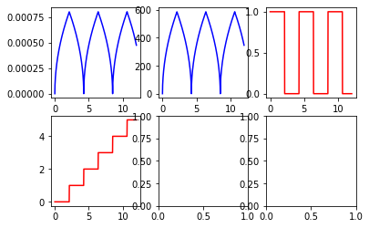

Spiral
API details.
Define a function which calculates
- phase
- radius of spiral
phi
phi (B:float, v:float, t:float, flag_out:int, t_max:float, spiral_count:int)
compute phi and radius
| Type | Details | |
|---|---|---|
| B | float | spiral arm distance |
| v | float | spiral angular velocity |
| t | float | time |
| flag_out | int | indicated if spiral goes out- or inwards |
| t_max | float | time for one outward spiral_count |
| spiral_count | int | counts the number of performed spirals |
Phase of spiral
The pase of the spiral has to grow and shrink for in and out going spirals as shown in Figure 1.
Lets turn this into a class
DutPatLoop
DutPatLoop ()
Class to implement DUT PAT loop for STB
So we create a method which is the same function as before
DutPatLoop.phi_method
DutPatLoop.phi_method (B:float, v:float, r_max:float, t:float)
compute phi and radius
| Type | Details | |
|---|---|---|
| B | float | spiral arm distance |
| v | float | spiral angular velocity |
| r_max | float | max radius in rad |
| t | float | time |
Spiral parameters
v = 0.11 # velocity in rad/s
B = 8.6e-6 # spiral arm distance
r_max=800e-6 # max radius in rad
t_max=3.14*(r_max)**2/(B*v) # calculate resulting spiral durationt_max2.12431289640592instantiate the class
dut_pat_loop=DutPatLoop()
Plots of the spiral phase
The plot ought to be the same as in Figure 1.
Check that the method phi_methodgives the same result as the function phi
assert phi_list_method==phi_listExtract method
using @patch from fastcore.utils one can define methods outside the class code which gives:
- more flexibility in adding markdown describing what the method will do
- adds automatically a description to the method
Add spiral method
DutPatLoop.phi_method_extract
DutPatLoop.phi_method_extract (B:float, v:float, r_max:float, t:float)
compute phi and radius
| Type | Details | |
|---|---|---|
| B | float | spiral arm distance |
| v | float | spiral angular velocity |
| r_max | float | max radius in rad |
| t | float | time |
Plots of the spiral phase
The plot ought to be the same as in Figure 1.